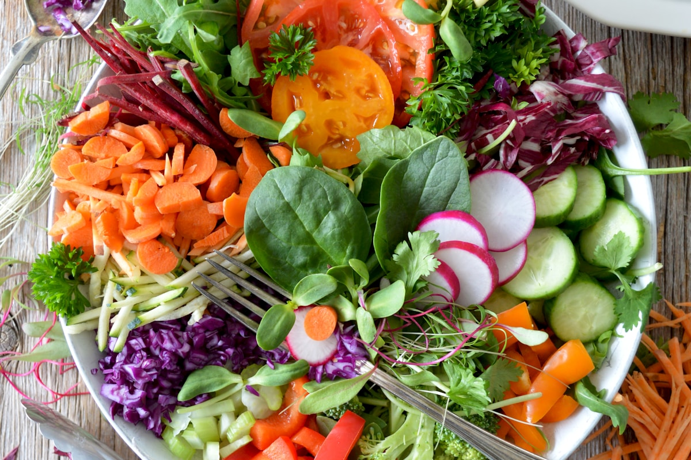

When twilight falls and the temperature drops, the human body naturally craves grounding, nutrient-dense evening meals. Seasonal farm-to-table dining during the colder months shifts away from raw leafy salads and delicate summer fruits, turning instead toward dense root crops, winter squashes, and ancient heritage grains. In this monograph, we explore the fascinating plant biology of cold-weather harvests, the culinary chemistry of dry roasting, and how to compose deeply satisfying, plant-forward dinner feasts that nourish body and soul.
1. Post-Frost Starch-to-Sugar Conversion Biology
Why do carrots, parsnips, rutabagas, and winter squashes taste remarkably sweeter when harvested after the first autumn frost? The phenomenon is an evolutionary survival mechanism developed by biennial root plants. As soil temperatures plunge toward freezing, plant cells face the mortal danger of ice crystal formation, which ruptures cell membranes and kills plant tissue.
To prevent cellular freezing, cold-hardy vegetables synthesize special enzymes (amylases) that actively break down complex, tasteless polysaccharides and starches into simple, soluble monosaccharides—primarily glucose, fructose, and sucrose. These dissolved sugars lower the freezing point of the plant's cellular sap, functioning as an organic natural antifreeze.
For the evening cook, this biological defense mechanism yields an extraordinary culinary ingredient: a root vegetable packed with natural sugars ready to caramelize into complex, nutty, and savory flavors when roasted in a hot cast-iron skillet or Dutch oven.
Furthermore, cold weather triggers an increase in cellular turgor and structural pectin density. When roasted slowly, post-frost roots retain a dense, custardy bite rather than breaking down into watery pulp. Honeynut squash, delicata, and black Spanish radishes all develop intense aromatic complexity following sub-freezing night temperatures.

2. The Chemistry of Dry-Roasting & Maillard Caramelization
Roasting root vegetables is far more than simply heating them until soft. It requires careful balance between internal starch gelatinization (which occurs at 140°F to 160°F) and surface caramelization/pyrolysis (which requires surface temperatures exceeding 320°F).
When wet vegetables are placed closely together in a shallow baking pan, water evaporates and becomes trapped, creating a steam zone that prevents pan surface temperatures from rising above 212°F (100°C). As a result, the vegetables steam rather than roast, turning limp, gray, and waterlogged without developing sweet, caramelized crusts.
To achieve crisp, bronzed exterior edges with melting, custardy interiors, follow these dry-roasting principles:
- Surface Dehydration: Cut root vegetables uniformly, pat them thoroughly dry with clean linen towels, and toss them with high-smoke-point oil (such as cold-pressed avocado or grapeseed oil) to ensure complete surface heat transfer.
- Thermal Spacing: Maintain at least one inch of space between vegetable chunks on heavy, preheated cast-iron baking sheets. Preheating the iron pan ensures immediate searing upon contact.
- High Radiant Convection: Roast at 425°F (218°C) in the lower third of the oven where bottom thermal radiation is strongest. Do not toss or flip the vegetables for the first 20 minutes to allow the bottom crust to bond and caramelize cleanly without tearing.
3. Heritage Grain Cornerstones for Evening Suppers
To anchor a cold-weather vegetable feast, we rely on nutrient-rich ancient grains that provide structural texture, nutty earthiness, and steady complex carbohydrates:
- Emmer / Farro Medio: An ancient hulled wheat cultivated in the Fertile Crescent for over 10,000 years. Farro medio retains an exceptional al dente chew even after slow simmering, releasing delicate notes of hazelnut and sweet hay. Simmered in vegetable broth with shallots and bay leaves, it forms the perfect textural base for roasted squash and caramelized onions.
- Wild Black Rice: Rich in anthocyanin antioxidants, heirloom black rice cooks into deep obsidian grains with a distinct floral, nutty aroma that contrasts strikingly against golden roasted butternut squash and vibrant red beets.
- Stone-Ground Flint Corn Polenta: Coarsely milled heritage corn simmered slowly for 45 minutes with cultured sweet cream butter, whole milk, and aged mountain cheeses provides a warm, comforting porridge that elevates any roasted harvest plate.
- Cracked Rye Berries: Toasting whole rye berries before simmering imparts a malty, sourdough-like aroma that complements roasted root vegetables and earthy woodland mushrooms.
- Golden Millet & Buckwheat: Naturally gluten-free heritage seeds that toast into fragrant, popcorn-like grains when dry-roasted in cast iron before broth-simmering.
4. Seasonal Harvest Dinner Roasting Matrix
| Vegetable Cut | Prep Technique | Roast Temp & Time | Complementary Herb & Fat Pairing |
|---|---|---|---|
| Honeynut or Butternut Squash | Halved lengthwise, seeds removed, scored in crosshatch | 400°F for 40–45 Mins | Cultured butter, raw wildflower honey, fresh sage, cracked nutmeg |
| Heritage Parsnips & Carrots | Peeled, sliced diagonally into 2-inch batons | 425°F for 30–35 Mins | Cold-pressed olive oil, winter thyme, aged apple cider reduction |
| Chioggia & Golden Beets | Scrubbed, wrapped in parchment foil pouches | 375°F for 60 Mins | Hazelnut oil, sherry reduction, bruised rosemary sprigs |
| Brussels Sprouts | Halved, placed cut-side down on preheated cast iron | 450°F for 22–25 Mins | Rendered duck fat or olive oil, crushed garlic, sea salt flake |
| Celeriac (Celery Root) | Thick-sliced into 1-inch steaks, seasoned | 400°F for 35–40 Mins | Brown butter, capers, lemon juice, chopped parsley |
5. The Alchemy of Cultured Compound Butters
An essential culinary bridge that unites dry-roasted vegetables and simmered ancient grains is high-fat cultured compound butter. In our kitchen, butter is crafted by fermenting raw mountain cream with active lactic cultures for 48 hours prior to churning. This develops high diacetyl concentrations, producing an intense hazelnut-like savoriness.
We fold bruised fresh woodland herbs—winter savory, charred broadleaf sage, cracked black peppercorns, and confit garlic—into the room-temperature cultured butter, rolling it into wax parchment logs and chilling until firm. Placing a medallion of herb butter atop a steaming roasted squash half creates an immediate, melting aromatic glaze that enrobes every bite in silkiness.
6. Step-by-Step Harvest Dinner Bowl Assembly
A truly satisfying vegetable feast requires textural diversity, temperature harmony, and a balance of fat, acid, and salt. Assemble your dinner bowls according to this structured framework:
- Step 1: Simmer the Grain Base: Simmer 1 cup of pearled farro medio in 3 cups of aromatic vegetable stock with a bay leaf and shallot for 25 minutes until al dente. Fluff with extra virgin olive oil and fresh cracked pepper.
- Step 2: High-Heat Sheet Roasting: Roast seasoned squash wedges and parsnips at 425°F on preheated cast-iron sheets until deeply bronzed and tender.
- Step 3: Craft the Emulsified Dressing: Whisk 3 tablespoons of stone-ground Dijon mustard, 2 tablespoons of aged cider vinegar, 1 tablespoon of raw honey, and 1/3 cup of extra virgin olive oil until glossy and emulsified.
- Step 4: Layer the Ceramic Bowls: Spoon 1.5 cups of warm farro into the base of wide earthenware bowls. Arrange roasted roots in distinct sections around the perimeter.
- Step 5: Garnish and Elevate: Drizzle the cider vinaigrette over the vegetables. Top with toasted pepitas, toasted hazelnuts, crumbled goat curd, and fresh winter chives.
7. Seasonal Variations Across Autumn & Winter
As the season progresses from early October through late February, the harvest palette evolves. In early autumn, pair delicate acorn squashes and tender thumbelina carrots with crisp orchard apple slices and fresh sage. In deep midwinter, lean into robust rutabagas, Jerusalem artichokes (sunchokes), and roasted black radishes paired with pungent roasted garlic and warm rosemary oil.
9. The Root Cellar Philosophy & Domestic Storage
Traditional root crops—parsnips, turnips, rutabagas, and carrots—retain peak sweetness and crispness when stored under optimal humidity and cool temperature conditions. In traditional Appalachian mountain larders, root vegetables were packed in damp sand or sawdust inside unheated root cellars maintained at 34°F to 38°F (1°C to 3°C) with 90% relative humidity.
In a modern home kitchen, store unwashed root crops in perforated breathable bags in your refrigerator's crisper drawer. Avoid storing root vegetables adjacent to ethylene-producing fruits like apples or pears during prolonged storage, as ethylene gas accelerates sprouting and bitterness in roots.
10. The Roasted Winter Squash & Farro Feast Blueprint
When preparing this signature harvest supper for family and guests, arrange the roasted components on an expansive, heated earthenware platter. Drizzle with warm rosemary-infused cider reduction and finish with sea salt flakes. Serve alongside hot, crusty sourdough flatbread for an unforgettable plant-forward evening feast.
8. Evening Dining Harmony & Accompaniments
Harvest root dinners pair magnificently with hot, crusty artisanal sourdough bread and cultured butter infused with garden herbs. Serve with chilled sparkling botanical ciders or warm spiced herbal teas to elevate the earthiness of the vegetables and complete an unforgettable evening feast.